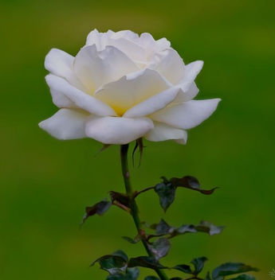

Flowers are considered beautiful because they are symbols of nature, beauty, and love. Flowers are beautiful due to their color and form, which provide aesthetic pleasure and inspiration. Flowers are beautiful due to their color, fragrance, form, and cultural symbolism, as well as their medicinal benefits.
